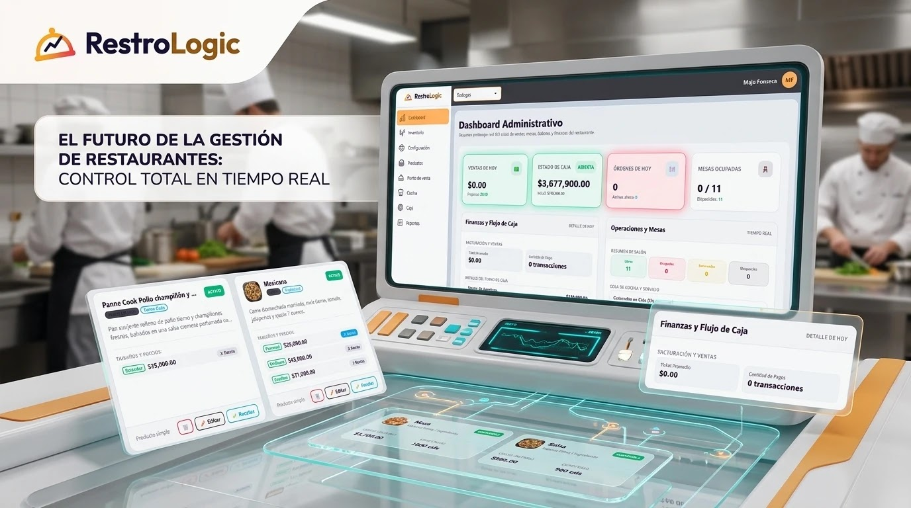
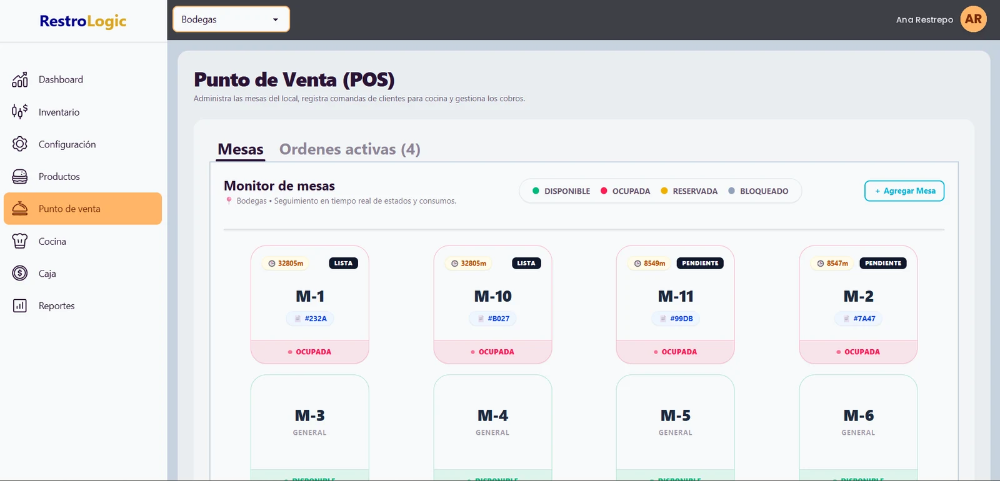
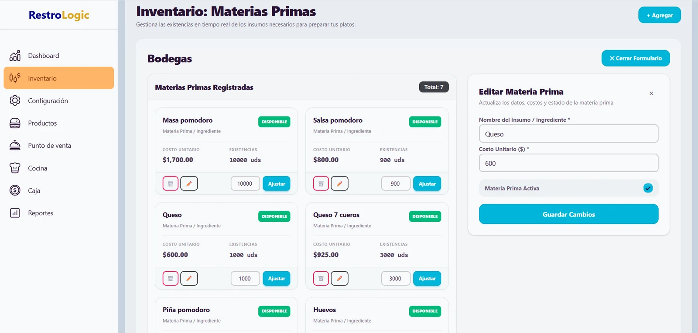
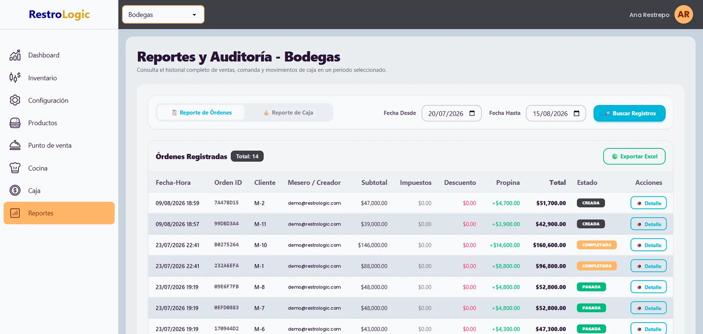
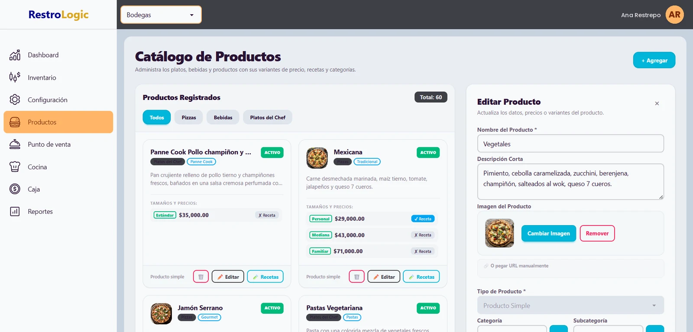
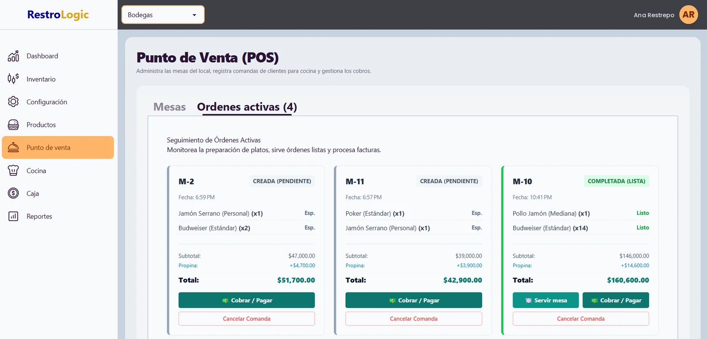
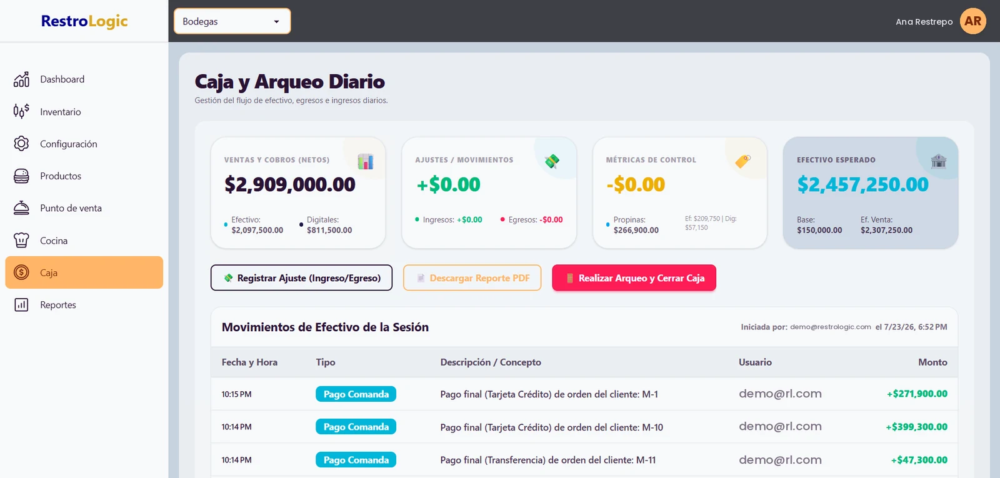
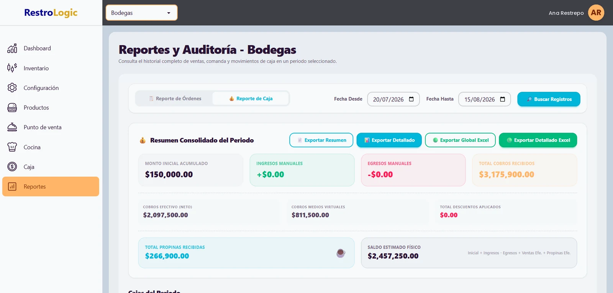

The order is taken
The server opens the table from a phone or tablet, builds the order with modifiers and sends it. No writing the ticket twice.
Step 1 · ~30 s
Built for real restaurants
From the moment a server takes the order to the moment you close the register. RestroLogic connects tables, kitchen, inventory and reporting in one platform — no paper tickets, no notebooks, no surprises at the end of the night.
The full flow
Every order moves through clear states. Everyone sees the same thing, at the same time.
The server opens the table from a phone or tablet, builds the order with modifiers and sends it. No writing the ticket twice.
Step 1 · ~30 s
The ticket appears instantly on the kitchen display, sorted by wait time. Cooks mark each dish as it progresses.
Step 2 · live
The server is notified the moment a dish is up. Fewer trips to the pass, fewer cold plates.
Step 3 · notification
Split the check, record the payment method, and at the end of the shift the register reconciles itself.
Step 4 · auto closing
Features
It isn't a POS with add-ons bolted on. Every area of the restaurant gets its own tool, and they all share the same data.
A live floor map with the status of every table. Take orders, add items, split checks and move parties between tables.
A kitchen screen with tickets sorted by age. Each station sees only its own items and marks progress dish by dish.
Define a recipe for each dish and inventory depletes itself on every sale. You always know your real cost and margin per item.
Open and close the register with a count by payment method. Every movement is logged with user, time and reason.
Your full menu with per-size price variants, categories, and each dish’s recipe wired straight into inventory.
Sales, best sellers, cash flow and full order history. Filter by date range, location or user.
Inside the product
Captures of the product running, not mockups. Every module is designed to be used in the middle of service.
The state of the business on one screen: today’s sales, register status, occupied tables and the kitchen queue, all live.

The floor monitor with every table’s status — free, occupied, reserved or blocked — plus elapsed time and its open ticket.

Every ingredient with its unit cost and stock on hand, adjustable in one click from the same screen.

The full history of orders and cash movements over any date range you choose, exportable to Excel.

More screens
Browse the other screens your team works with every day.

Dishes, drinks and per-size price variants, each with its own recipe and category.

Track every open ticket: what is being prepared, what is ready, and what the check adds up to.

Sales by payment method, adjustments, tips and expected cash before closing the shift.

The consolidated period view: cash and digital takings, tips and estimated balance.
Modules in development. We will announce them here the moment they are production-ready.
Delivery orders, driver assignment and per-shift settlement.
Issuing with tax-authority validation, CUFE and automatic delivery to the customer.
Your menu online so guests can order from the table on their own phone.
Getting started
No servers, no installs and no pause in service. It runs in any browser.
We load products, categories, recipes, tables and taxes. If your data is already in a spreadsheet, we migrate it for you.
One short session per role: servers, kitchen, cashier and management. The interface is designed to be learned in a single shift.
From the very first service you get real reports on sales, costs and cash so you can decide with data.
Plans
Every plan includes updates, backups and support. Cancel whenever you want.
For restaurants getting started
For growing operations
For chains and franchises
Prices in USD per location. Multiple locations or a franchise? Let’s talk about a tailored plan.
FAQ
Still have a question? Write to us and we answer the same day.
No. RestroLogic runs in the browser, so it works on the cashier computer, a tablet or your servers’ phones. All you need is an internet connection.
The app keeps the session alive and retries synchronisation automatically. When the connection returns, pending orders are sent without losing information.
Yes. The system handles role-based permissions: you define exactly which modules, reports and actions each person can use, and who authorises voids or discounts.
Yes, whenever a dish has a recipe. When you sell an item, the system deducts its ingredients according to the recipe and updates the cost, so you see your real margin per dish.
Yes. Each location runs its own register, inventory and staff, and from the admin dashboard you see the consolidated view and can compare performance across locations.
It depends on the size of your menu, but a standard restaurant is live within a few days. We load products and recipes with you before you go live.
Free demo
Book a 30-minute demo. We walk through the full flow using products from your own restaurant and answer your questions live.